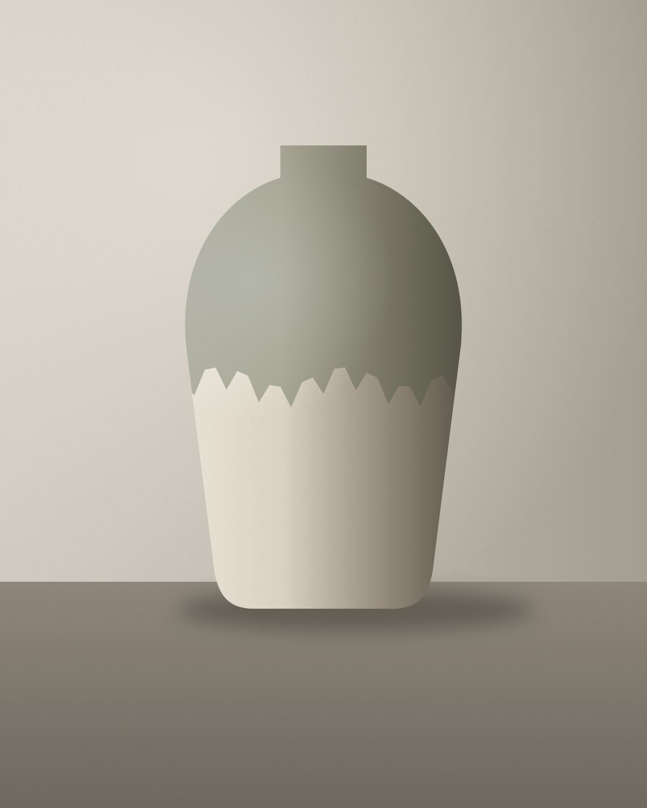

This page is the catalogue of the Vitrine pack. First screen A: one object.
Stoneware made to be used for a lifetime
Jars, bottles and bowls thrown by hand in a coastal workshop and fired for three days in a wood kiln. Twelve pieces a season, each one numbered.
Storage jar, ash glaze
£1,450Sold
First screen B: the index of plates.
Works for the winter season
Seven pieces from the autumn firing, shown in the studio until 20 December.
Open Thursday to Sunday
- 01Storage jar, ash glazeWood-fired stoneware46 × 34 cmSold
- 02Tall bottle, iron slipStoneware41 × 18 cm£680
- 03Serving bowl, celadonPorcelain9 × 32 cm£320
- 04Beakers, set of fourStoneware, shino11 × 8 cm£180
- 05Lamp base, tenmokuStoneware, linen shade52 × 30 cm£740
- 06Bud vase with winter stemsPorcelain14 × 7 cm£95
- 07

Lidded jar, two glazesWood-fired stoneware38 × 26 cmOn request
First screen C: a statement and one small plate.
Pots for the kitchen table, thrown slowly, fired with driftwood, glazed with the ash the kiln leaves behind.
A one-person workshop on the Kent coast, open to visitors four days a week.
Tall bottle, iron slip
£680Available
The case
Plates 02–07, autumn firing
02 Tall bottle, iron slip
£680Available
03 Serving bowl, celadon
£320Available
04 Beakers, set of four
£180Available
05 Lamp base, tenmoku
£740Sold
06 Bud vase with winter stems
£95Available
- Stand-in photo
07 Lidded jar, two glazes
On requestAvailable
The workshop, Saltings Yard
One wheel, one kiln, one pair of hands
Maren trained in Mashiko and Stoke before taking the old net store in 2014. Clay is dug two miles inland and left to age for a year.
The kiln is fired twice a year. What comes out is sorted, numbered and photographed before anything is sold.
12years in the yard, two firings a year
Come to an open dayStorage jar, ash glaze
What each piece is made of
Every work leaves the studio with a card that records the same facts as the list below.
- Clay
- Local red earthenware blended with St Thomas stoneware, aged twelve months
- Firing
- Anagama wood kiln, 72 hours, to 1,300 °C
- Glaze
- Oak and driftwood ash, applied by pouring
- Use
- Food safe; dishwasher safe except pieces with gold repair
- Care
- Wash by hand, dry upside down, keep away from direct flame
- Lead time
- Commissions 14–20 weeks, timed to the next firing
How a commission is made
Four stages, about four months
- I
A conversation
We talk about where the piece will live, how it will be used and what it should hold.
One visit or call
- II
Drawings
You receive two or three drawings at full scale with the glaze tests that go with them.
2 weeks
- III
Throwing and drying
Several pieces are made so that the best one can be chosen after the firing.
6–8 weeks
- IV
The firing
Three days and nights of stoking. The kiln cools for a week before it is opened.
Next: March 2027
The studio in figures
1,300°C
Top temperature of the wood kiln
72hours
Stoking without a break, every firing
2a year
Firings, in March and September
140
Pieces numbered since the first firing
A word from a collector
“The jar stands by the window and the light moves across it all day. I have never owned anything that changes so much while staying still.”
Ruth Okafor
List of works
All prices include VAT
Vessels
| No. | Work | Material | Size, cm | Year | Price |
|---|---|---|---|---|---|
| 01 | Storage jar, ash glaze | Stoneware | 46 × 34 | 2026 | Sold |
| 02 | Tall bottle, iron slip | Stoneware | 41 × 18 | 2026 | £680 |
| 07 | Lidded jar, two glazes | Stoneware | 38 × 26 | 2026 | On request |
| 08 | Moon jar, natural ash | Stoneware | 36 × 36 | 2025 | £1,900 |
Table
| No. | Work | Material | Size, cm | Year | Price |
|---|---|---|---|---|---|
| 03 | Serving bowl, celadon | Porcelain | 9 × 32 | 2025 | £320 |
| 04 | Beakers, set of four | Stoneware | 11 × 8 | 2026 | £180 |
| 09 | Dinner plates, six | Stoneware | 2 × 27 | 2026 | £360 |
Light
| No. | Work | Material | Size, cm | Year | Price |
|---|---|---|---|---|---|
| 05 | Lamp base, tenmoku | Stoneware, linen | 52 × 30 | 2025 | Sold |
| 10 | Wall sconce pair | Porcelain, brass | 24 × 12 | 2026 | £540 |
Open days and shows
18Oct · Sun
Kiln openingThe workshop, Saltings Yard
11:00–16:00
14Nov · Sat
Winter show: seven new worksThe workshop, until 20 December
Thu–Sun
23Jan · Sat
Throwing workshop for beginnersSix places, clay and firing included
£160
12Mar · Fri
Spring firing, visitors welcomeHelp stoke the kiln for a shift
Free
Who works in the yard
i Maren Holt
ii Tomasz Wierzbicki
iii Ines Carvalho
Questions people ask
Anything else, write to the studio. Replies come within two working days.
Write to the studioDo you ship outside the United Kingdom?
Yes, to Europe and North America. Each piece is double boxed and insured; shipping is quoted with the piece.
Can I reserve a piece before the show opens?
Pieces are released on the first morning of each show. You can ask to be told when the list goes up.
Is the glaze safe for food and the dishwasher?
All glazes are tested for food use. Tableware is dishwasher safe; large jars are best washed by hand.
Do you take commissions for restaurants?
A small number each year, planned around the two firings. Allow at least five months.
Ask about a piece
Tall bottle, iron slip
Not yet connectedThe form opens a message in your own email program, addressed to the studio.
Finding the yard
Saltings Yard, Whitstable
Island Wall, Whitstable
Kent CT5 1EP
Open Thursday to Sunday
- Monday to Wednesday
- Closed
- Thursday to Saturday
- 10:00–17:00
- Sunday
- 11:00–16:00
- By train
- Whitstable station, then ten minutes on foot along Harbour Street.
- By car
- Pay and display on Gorrell Tank. The yard has no parking.
- Step-free
- Level entrance from the yard; the kiln shed has one step.
Work not found
This plate is empty
The page you asked for is not in the case. The list of works has everything that is.
Elements
Each in its states
Status, tags, notices
Open now, until 17:00
Closed now, opens Thursday at 10:00
Available
Sold
ShippingLarge jars are sent by courier in a wooden crate.
Closed 24 December to 2 JanuaryOrders placed then are packed on 3 January.
Picture slot
Photograph in a 3:2 slot
Drawing in a 3:2 slot
Drawing parts
Form controls
As it should appear on the gift card.
Error: enter a full email address, like name@example.com.
Up to six of each set.
Choices
Table with figures
| Firing | Hours | Pieces |
|---|---|---|
| Spring 2026 | 71 | 64 |
| Autumn 2026 | 74 | 58 |
Disclosure
What does the red dot mean?
As in a gallery: the piece is sold.